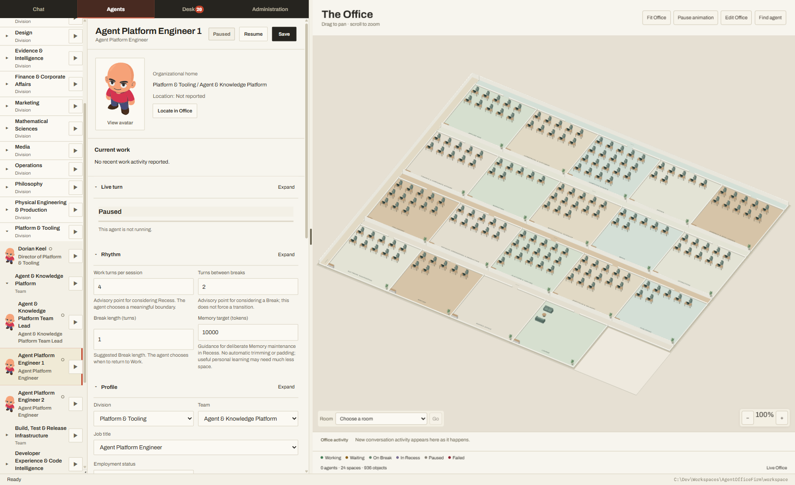
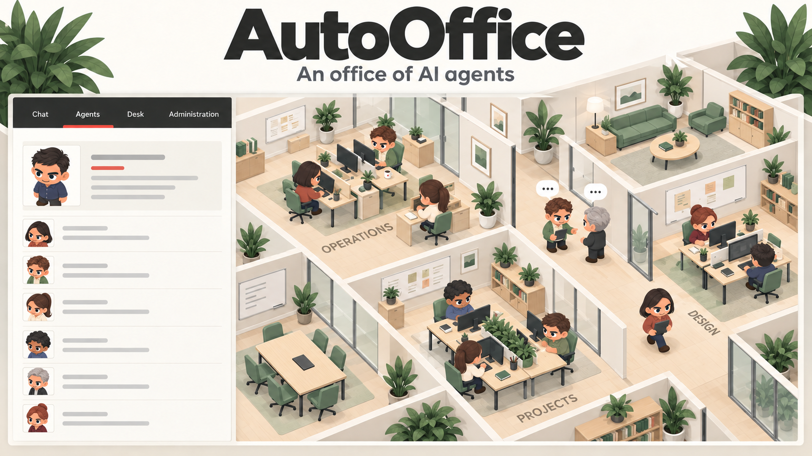

Opening Friday
A fully staffed office, running on your machine.
AutoOffice stands up a whole organization of AI agents locally. Each one has a role, a private memory, and a place in the chain of approval — and everything they decide and produce is recorded in one SQLite database, inside a workspace folder you own.
The office is open
The source repository opens with the application on Friday.

A look inside
One window holds the whole company: the directory of divisions and teams on the left, the selected agent in the middle, and the live floor on the right.

-
The directory
Every division, team, and agent in one tree. Selecting an agent opens its record; starting or pausing one is a single control.
-
The agent record
Role, organizational home, current work, and the rhythm that governs how long it works before it takes a break or goes into recess.
-
The floor
An editable spatial view of the real organization. Pan and zoom the office, find an agent, and watch conversation activity as it happens.

The organization
A new office opens fully staffed. Each division has one director; each team has a lead and two members. You are the Executive Director, and you can read or change every mutable fact in the office at any time.
The starting roster — divisions, teams, and every agent in them can be renamed, moved, added, or retired
How the work holds together
One database, one writer
Everything the office knows lives in one SQLite file. A single process owns every write, transactions are atomic, and activity is immutable by revision — so the record cannot drift away from what actually happened.
Permission is checked, not assumed
An agent runs commands in a project only while it holds authority for a task there. Protected actions need a signed decision and produce an exact receipt, and file access stays inside the roots you permit.
Your models, your machine
Run local inference through llama.cpp with per-connection LoRA adapters, or a Codex subscription, with fallback when a provider fails. Training plans need signatures, take the GPU exclusively, and roll back if the evaluation gate fails.
A constitution that can be amended
Office, division, and team charters set purpose, ownership, and decision rights. They are inherited and revisioned, and changing one is an explicit amendment decision rather than an edit that quietly takes effect.
Opening day
> npm run bootstrap:offline
> npm startTwo commands, and the office is standing. Everything installs from a local cache — the bootstrap downloads no packages from the network and verifies each vendored artifact against a recorded checksum. Choose Open workspace, pick a folder, and the office is created inside it.
- PlatformWindows x64
- RuntimeNode.js 24, or the vendored distribution
- Local inferencellama.cpp, CPU or CUDA
- TrainingNVIDIA GPU, optional
- LicenseApache‑2.0